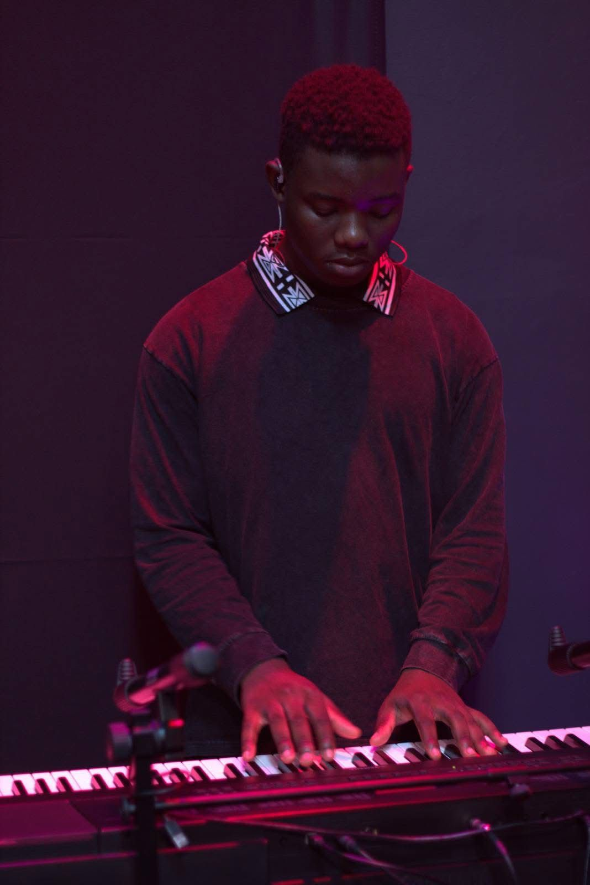
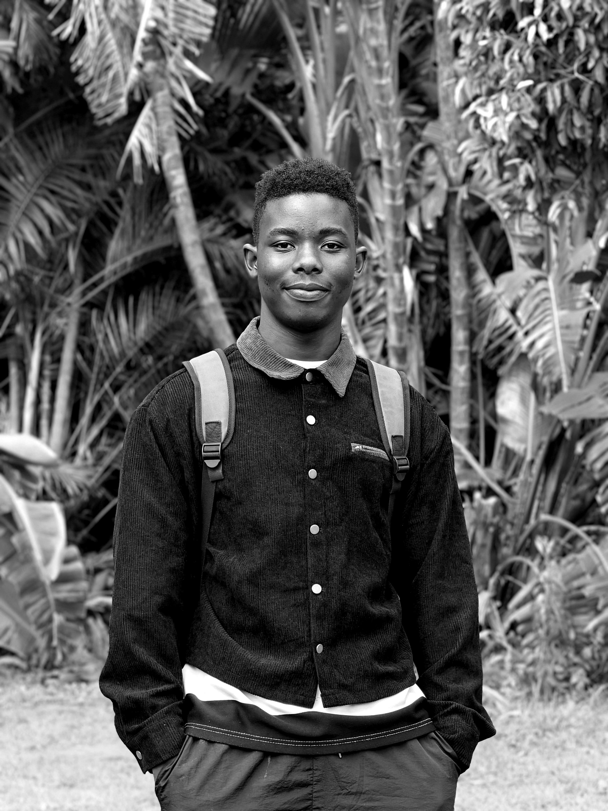
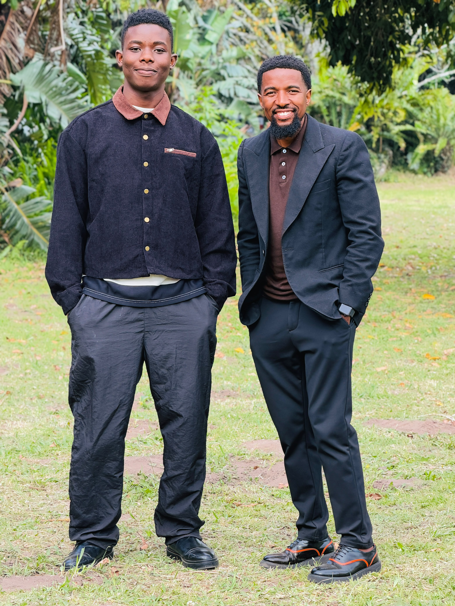

Where I've spent my time
A working timeline across engineering study, live music and collaboration. Roles are described by what I actually do, without claims I can't support.
Main AUX Keys Player — LMAE Sounds
Main auxiliary keyboard player in the band's live setup. Responsible for the layered keys sounds used in performance, and for keeping those sounds consistent from one setting to the next.
Keys — CRC East London
Resident keys player for the worship team: weekly services, special events, gospel arrangements and AUX keys support.
Artist collaborations
Performance and session work alongside Ziyanda Tshangana and Andile Tsako.
Live & session performance
Live performance and session recording across worship, gospel and band settings, including keyboard arrangements and part development.
Diploma in Electrical Engineering — WSU
Studying circuit analysis, electronics, digital systems, power concepts and engineering mathematics at Walter Sisulu University.
From the live setting


